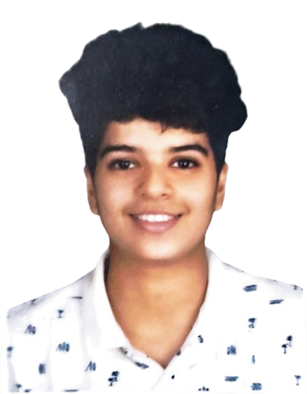
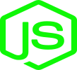

Hi, I’m Dhiti Varma
A passionate Software Developer crafting fast, responsive, and scalable web apps.
From clean UI to powerful backend logic, I bring digital ideas to life.


Welcome to my web application! I’m a passionate and skilled full-stack developer with a strong command over
both frontend and backend technologies. I specialize in crafting seamless, responsive, and dynamic digital
experiences while ensuring backend systems are robust, efficient, and scalable.
On the frontend, I work with core web technologies like HTML, CSS, and JavaScript, as well as powerful
libraries and frameworks like React and Angular, to build intuitive and engaging user interfaces. I focus on
design responsiveness, clean layouts, and accessibility to make sure the user experience is not only
functional but also enjoyable.
Behind the scenes, I’m proficient in backend technologies such as Node.js, Express, and MongoDB. I build
secure APIs, handle authentication, and manage databases with precision. My experience with the MERN stack
allows me to take projects from concept to deployment, handling both client-side interactivity and
server-side architecture with ease.
I also utilize tools like Figma and Canva to visualize and prototype modern designs that reflect brand
identity and user needs. Whether it's building a dashboard, a blog platform, or an e-commerce site, I always
ensure that design and development go hand-in-hand.
Beyond just writing code, I enjoy solving real-world problems through logical thinking, creative solutions,
and efficient workflows. I continuously stay updated with the latest trends and best practices in web
development to keep improving my craft. Every project I take on is not just a task — it’s a new opportunity
to learn, create, and deliver value.
Thank you for stopping by and exploring my work. I look forward to the possibility of building something
incredible together!
Tech Skills

As a passionate and skilled full-stack developer, I bring a strong command over both frontend and backend
technologies. My journey began with mastering the fundamentals — HTML and CSS — which I use to craft clean,
responsive, and accessible web pages. I enhance user interactions with JavaScript and dive deeper into
advanced frontend development using powerful libraries like React, ensuring smooth performance and dynamic
user experiences.
On the design side, I utilize tools like Figma and Canva to visualize and prototype interfaces that are not
only modern and intuitive but also align with user needs and brand identity.
On the backend, I specialize in the MERN stack — MongoDB, Express.js, React, and Node.js — allowing me to
build scalable, secure, and fully functional web applications from start to finish. I handle everything from
database architecture and API integration to server-side logic with efficiency and precision. Every project
is a new opportunity for me to combine logic with creativity, and my aim is always to deliver solutions that
are robust, user-centric, and future-ready. Whether it's designing a sleek interface or implementing complex
backend features, I ensure quality, performance, and reliability in everything I build.
Projects
As the Managing Director of Invigorate, I spearheaded the development of an advanced Doctor Appointment and
Event Management Web Application aimed at revolutionizing healthcare accessibility and coordination. This
full-stack solution was built using the MERN stack (MongoDB, Express.js, React.js, and Node.js) and is
designed to provide users with a seamless experience for booking medical appointments, lab test schedules,
and healthcare-related events.
The application allows patients to register, search for doctors based on specialty and availability, select
appointment slots, and choose between online or offline payment methods. Doctors receive real-time
appointment updates and can manage their schedules through an intuitive dashboard. In addition to individual
consultations, the platform also supports event management features for medical camps, vaccination drives,
and emergency services, allowing organizations to request medical staff, ambulances, and first aid support
for various events.
By integrating user-friendly design, secure authentication, and robust backend functionality, this project
not only improves the efficiency of healthcare service delivery but also offers a scalable model for
expanding digital health solutions. My leadership involved overseeing end-to-end development, UI/UX design
via Figma and Canva, deployment, and ensuring the overall functionality aligned with real-world healthcare
needs.